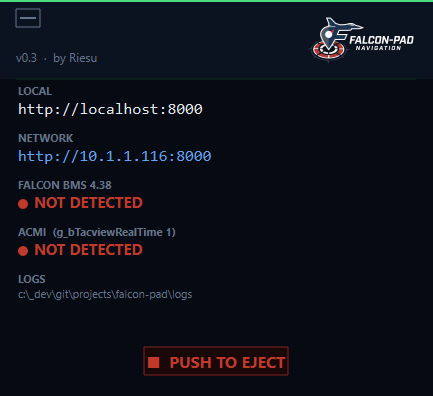
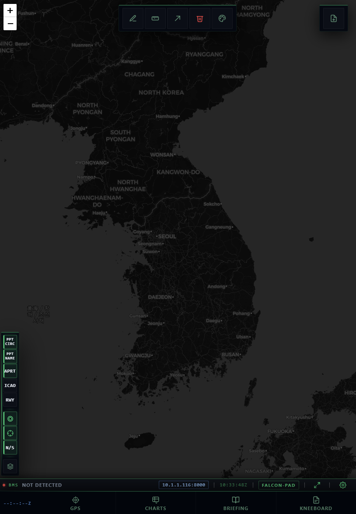
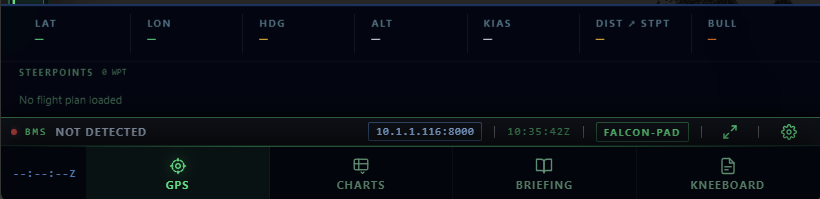
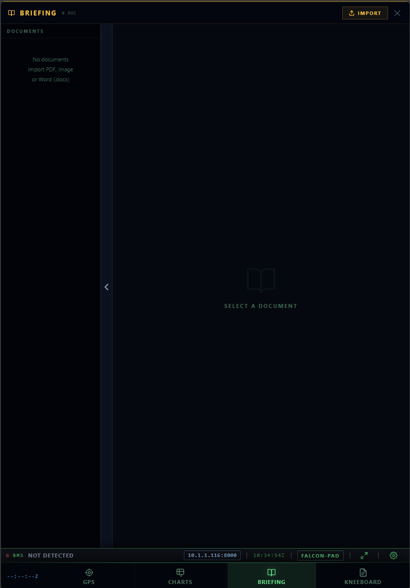
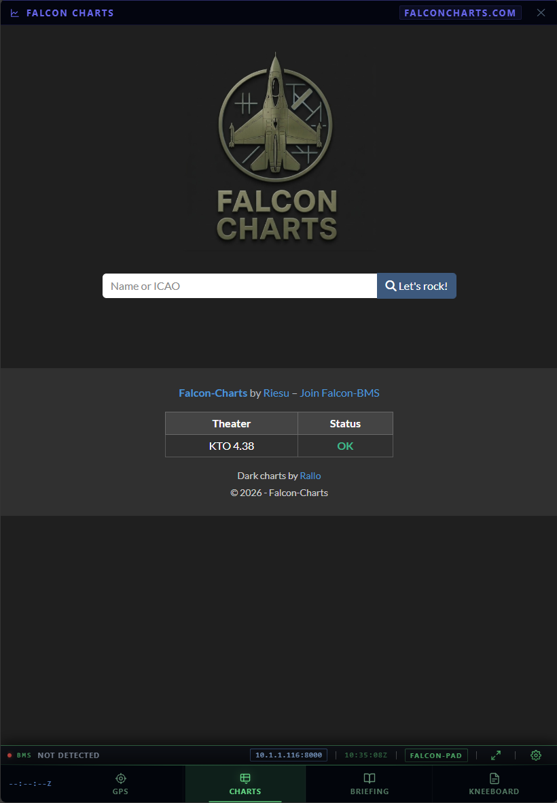
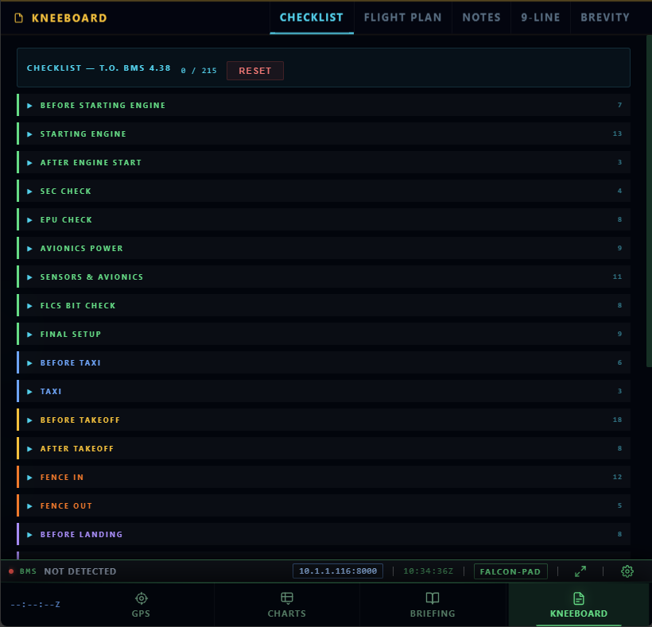
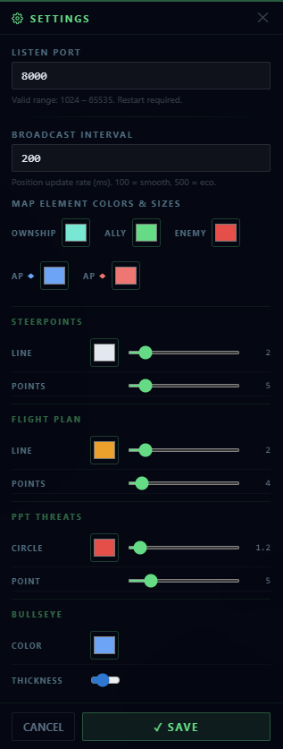

Guide de l'interface et présentation des fonctionnalités.
Lorsque vous exécutez FalconPad.exe, une petite fenêtre s'ouvre avec vos informations de connexion.
set g_bTacviewRealTime 1 requis)
La vue principale. Votre appareil, steerpoints, cercles de menace, bullseye et tous les contacts sont superposés sur une carte en direct.
Barre d'outils en haut : dessin, mesure, partage de lien, effacement et sélecteur de couleur.

L'onglet GPS affiche vos données de vol en direct et la liste des steerpoints.
Les steerpoints sont listés en dessous avec leur index, nom et altitude. Chargés automatiquement depuis BMS ou votre fichier DTC .ini.

Importez et consultez vos briefings de mission directement sur votre tablette.
personal/ à côté de l'exe — ils apparaissent automatiquement
L'onglet Charts intègre Falcon-Charts directement dans l'interface — cartes d'aéroport, procédures d'approche pour le théâtre en cours.

L'onglet Kneeboard centralise toutes les références de mission en un seul endroit.
Les phases de la checklist sont codées par couleur : sol, roulage, décollage, combat, atterrissage, extinction.

Cliquez sur l'icône engrenage dans la barre de statut pour ouvrir les paramètres.
